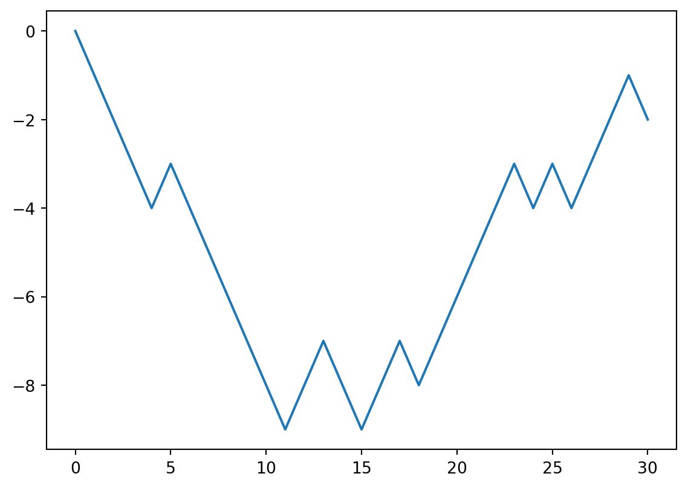
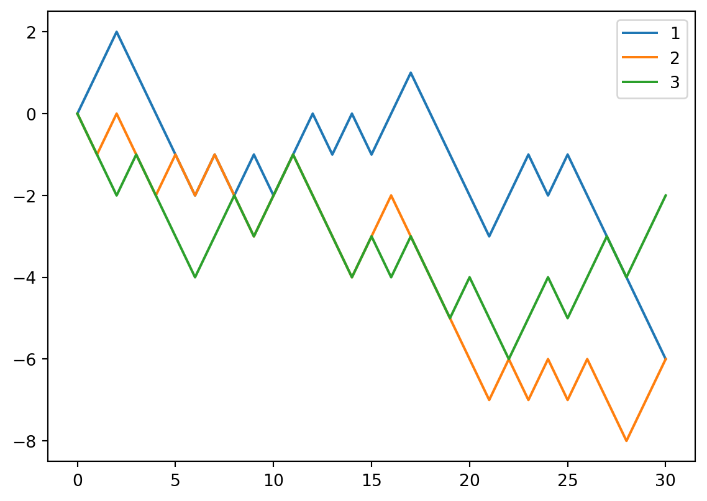

import numpy as npBasics
The basic data structure for numpy is numpy.ndarray. You may treat it as a generalized version of lists. However it can do so much more than the build-in list.
To use numpy, we just import it. In most cases you would like to use the alias np.
Note
In many cases, numpy.ndarray is a huge object since it stores tons of data. Therefore many of the operations related to numpy.ndarray are “in-place” by default. This means that if you don’t explicitly ask for a copy, there will be only one copy of the array and all later operations make changes to the original one.
However there are many cases that
Create np.ndarray
- convert a list into a numpy array.
np.zeros,np.zeros_likenp.ones,np.ones_likenp.eyenp.random.randnp.arangenp.linspace
Note
Please be very careful about the format of the input. For example, when you want to specify the dimension of the array, using np.zeros, you need to input a tuple. On the other hand, when using np.random.rand, you just directly input the dimensions one by one.
import numpy as np
np.zeros((3, 2))
np.random.rand(3, 2)In this case, the official documents are always your friend.
Mathematical and Statistical Methods
+,-,*,/,**, etc..np.sin,np.exp,np.sqrt, etc..mean,sum,std,var,cumsummaxandminmaximumandminimumargminandargmaxnp.sortnp.unique,np.anynp.dot: Matrix multiplicationnp.concatenateBroadcast
Example 1 (Axis) Given A = np.array([[1,2],[3,4]]) and B = np.array([[5,6],[7,8]]), please use np.concatenate to concatencate these two matrices to get a new matrix, in the order:
Aleft,BrightAright,BleftAup,BdownAdown,Bup
Common attributes and methods
shapedtypendim- Any arithmetic operations between equal-size arrays applies the operation element-wise.
Example 2 MNIST is a very famous dataset of hand written images. Here is how to load it. Note that in this instance of the dataset the data are stored as numpy arraies.
import tensorflow as tf
(X_train, y_train), (X_test, y_test) = tf.keras.datasets.mnist.load_data()
X_train.shapeBasic indexing and slicing
First see the following example.
Example 3
import numpy as np
arr = np.arange(10)
print(arr[5])
print(arr[5:8])
arr[5:8] = 12
print(arr)
print(arr[5:8:2])
print(arr[8:5:-1])
print(arr[::-1])5
[5 6 7]
[ 0 1 2 3 4 12 12 12 8 9]
[12 12]
[ 8 12 12]
[ 9 8 12 12 12 4 3 2 1 0]To do slicing in higher dimensional case, you may either treat a numpy array as a nested list, or you may directly work with it with multiindexes.
Example 4
import numpy as np
arr3d = np.arange(12).reshape(2, 2, 3)
print('case 1:\n {}'.format(arr3d))
print('case 2:\n {}'.format(arr3d[0, 1, 2]))
print('case 3:\n {}'.format(arr3d[:, 0: 2, 1]))
print('case 4:\n {}'.format(arr3d[:, 0: 2, 1:2]))case 1:
[[[ 0 1 2]
[ 3 4 5]]
[[ 6 7 8]
[ 9 10 11]]]
case 2:
5
case 3:
[[ 1 4]
[ 7 10]]
case 4:
[[[ 1]
[ 4]]
[[ 7]
[10]]]Boolean Indexing
numpy array can accept index in terms of numpy arries with boolean indexing.
Example 5
import numpy as np
a = np.arange(4)
b = np.array([True, True, False, True])
print(a)
print(b)
print(a[b])[0 1 2 3]
[ True True False True]
[0 1 3]We could combine this way with the logic computation to filter out the elements we don’t want.
Example 6 Please replace the odd number in the array by its negative.
import numpy as np
arr = np.arange(10)
odd = arr %2 == 1
arr[odd] = arr[odd] * (-1)
print(arr)[ 0 -1 2 -3 4 -5 6 -7 8 -9]Fancy indexing
Fancy indexing is a term adopted by NumPy to describe indexing using integer arrays.
Example 7
import numpy as np
arr = np.zeros((8, 4))
for i in range(8):
arr[i] = i
arr[[4, 3, 0, 6]]array([[4., 4., 4., 4.],
[3., 3., 3., 3.],
[0., 0., 0., 0.],
[6., 6., 6., 6.]])
Example 8
import numpy as np
arr = np.arange(32).reshape((8, 4))
print(arr)
print(arr[[1, 5, 7, 2], [0, 3, 1, 2]])
print(arr[[1, 5, 7, 2]][:, [0, 3, 1, 2]])[[ 0 1 2 3]
[ 4 5 6 7]
[ 8 9 10 11]
[12 13 14 15]
[16 17 18 19]
[20 21 22 23]
[24 25 26 27]
[28 29 30 31]]
[ 4 23 29 10]
[[ 4 7 5 6]
[20 23 21 22]
[28 31 29 30]
[ 8 11 9 10]]Copies and views
The view of an numpy array is a way to get access to the array without copying internel data. When operating with a view, the original data as well as all other views of the original data will be modified simutanously.
The default setting for copies and views is that, basic indexing and slicing will make views, and advanced indexing and slicing (e.g. boolean indexing, fancy indexing, etc.) will make copies. For other operations, you need to check the documents to know how they work. For example, np.reshape creates a view where possible, and np.flatten always creates a copy.
You may use np.view() or np.copy() to make views or copies explicitly. ::: {#exm-}
import numpy as np
arr = np.arange(10)
b = arr[5:8]
print('arr is {}'.format(arr))
print('b is {}'.format(b))
b[0] = -1
print('arr is {}'.format(arr))
print('b is {}'.format(b))
arr[6] = -2
print('arr is {}'.format(arr))
print('b is {}'.format(b))
print('The base of b is {}'.format(b.base))arr is [0 1 2 3 4 5 6 7 8 9]
b is [5 6 7]
arr is [ 0 1 2 3 4 -1 6 7 8 9]
b is [-1 6 7]
arr is [ 0 1 2 3 4 -1 -2 7 8 9]
b is [-1 -2 7]
The base of b is [ 0 1 2 3 4 -1 -2 7 8 9]:::
The way to make explicit copy is .copy().
Example 9
import numpy as np
arr = np.arange(10)
b = arr[5:8].copy()
print('arr is {}'.format(arr))
print('b is {}'.format(b))
b[0] = -1
print('arr is {}'.format(arr))
print('b is {}'.format(b))
arr[6] = -2
print('arr is {}'.format(arr))
print('b is {}'.format(b))
print('The base of b is {}'.format(b.base))arr is [0 1 2 3 4 5 6 7 8 9]
b is [5 6 7]
arr is [0 1 2 3 4 5 6 7 8 9]
b is [-1 6 7]
arr is [ 0 1 2 3 4 5 -2 7 8 9]
b is [-1 6 7]
The base of b is NoneMore commands
.Taxis=nis very important.np.reshape()np.tile()np.repeat()
More advanced commands
np.where()np.any()np.all()np.argsort()
Example 10 Get the position where elements of a and b match.
a = np.array([1,2,3,2,3,4,3,4,5,6])
b = np.array([7,2,10,2,7,4,9,4,9,8])
np.where(a == b)(array([1, 3, 5, 7], dtype=int64),)
Example 11
a = np.array([1,2,3,2,3,4,3,4,5,6])
b = np.array([7,2,10,2,7,4,9,4,9,8])
np.where(a == b, a*2, b+1)array([ 8, 4, 11, 4, 8, 8, 10, 8, 10, 9])
Example 12 (Playing with axis)
import numpy as np
a = np.array([[[1,2],[3,4]],[[5,6],[7,8]]])
np.any(a==1, axis=0)
np.any(a==1, axis=1)
np.any(a==1, axis=2)
np.any(a==2, axis=0)
np.any(a==2, axis=1)
np.any(a==2, axis=2)
np.any(a==5, axis=0)
np.any(a==5, axis=1)
np.any(a==5, axis=2)array([[False, False],
[ True, False]])Examples
Example 13 (Random walks) Adam walks randomly along the axis. He starts from 0. Every step he has equal possibility to go left or right. Please simulate this process.
Use choices to record the choice of Adam at each step. We may generate a random array where 0 represents left and 1 represents right.
Use positions to record the position of Adam at each step. Using choices, the position is +1 if we see a 1 and the position is -1 if we see a 0. So the most elegent way to perform this is to
- Convert
choicesfrom{0, 1}to{-1, 1}. - To record the starting position, we attach
0to the beginning of the newchoices. - Apply
cumsumtochoicesto getpositions.
import numpy as np
step = 30
choices = np.random.randint(2, size=step)
choices = choices * 2 - 1
choices = np.concatenate(([0], choices))
positions = choices.cumsum()
import matplotlib.pyplot as plt
plt.plot(positions)
Example 14 (Many random walks) We mainly use numpy.ndarray to write the code in the previous example. The best part here is that it can be easily generalized to many random walks.
Still keep choices and positions in mind. Now we would like to deal with multiple people simutanously. Each row represents one person’s random walk. All the formulas stay the same. We only need to update the dimension setting in the previous code.
- Update
sizeinnp.random.randint. - Update
[0]tonp.zeros((N, 1))inconcatenate. - For
cumsumandconcatenate, addaxis=1to indicate that we perform the operations alongaxis 1. - We plot each row in the same figure.
plt.legendis used to show the label for each line.
import numpy as np
step = 30
N = 3
choices = np.random.randint(2, size=(N, step))
choices = choices * 2 - 1
choices = np.concatenate((np.zeros((N, 1)), choices), axis=1)
positions = choices.cumsum(axis=1)
import matplotlib.pyplot as plt
for row in positions:
plt.plot(row)
plt.legend([1, 2, 3])<matplotlib.legend.Legend at 0x21a80c38280>
Example 15 (Analyze positions) We play with the numpy array positions to get some information about the random walks of three generated in the previous example.
- The maximal position:
positions.max()2.0- The maximal position for each one:
positions.max(axis=1)array([2., 0., 0.])- The maximal position across all three for each step:
positions.max(axis=0)array([ 0., 1., 2., 1., 0., -1., -2., -1., -2., -1., -2., -1., 0.,
-1., 0., -1., 0., 1., 0., -1., -2., -3., -2., -1., -2., -1.,
-2., -3., -4., -3., -2.])- Check whether anyone once got to the position 3:
(positions>=3).any(axis=1)array([False, False, False])- The number of people who once got to the position 3:
(positions>=3).any(axis=1).sum()0- Which step for each one gets to the right most position:
positions.argmax(axis=1)array([2, 0, 0], dtype=int64)